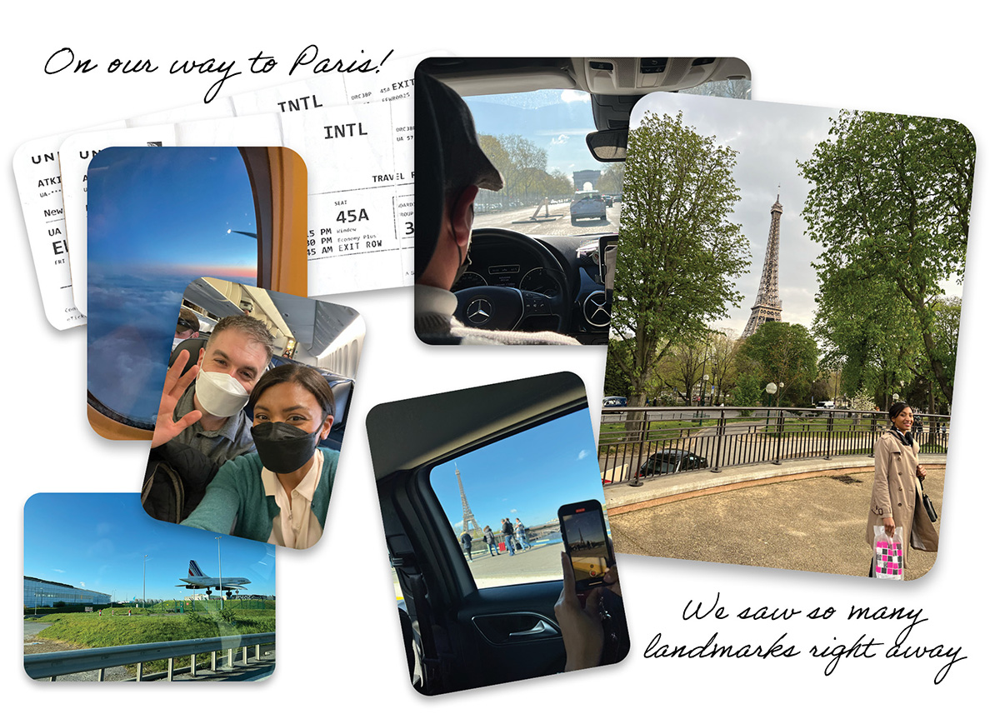
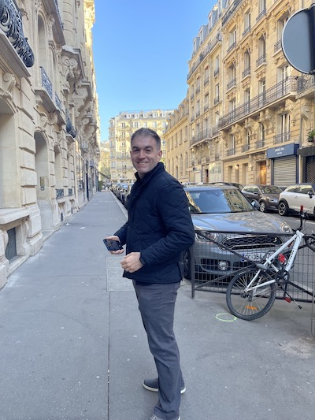
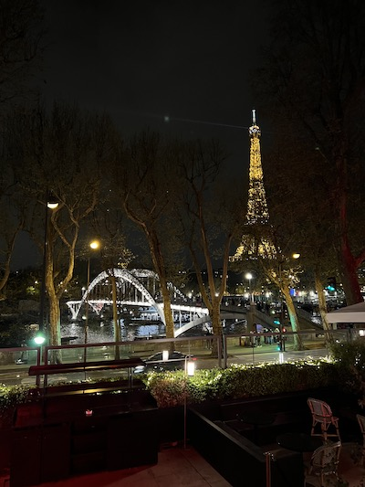
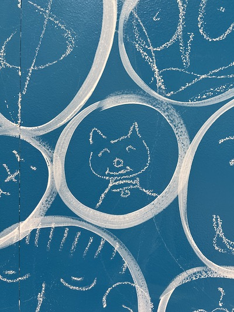
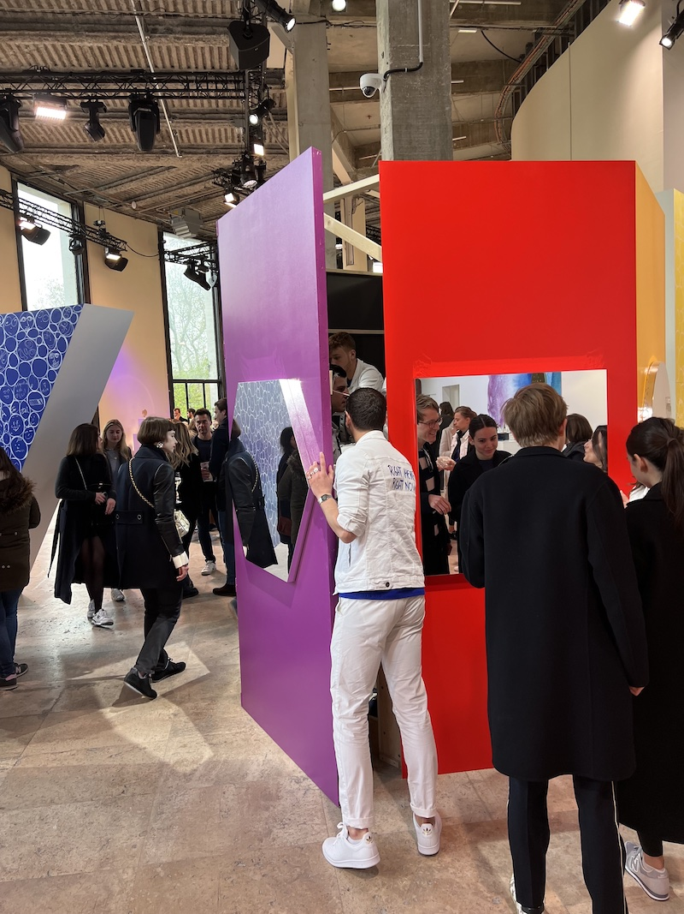
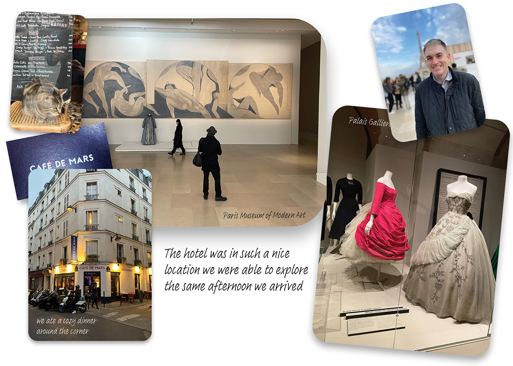
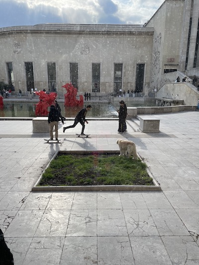
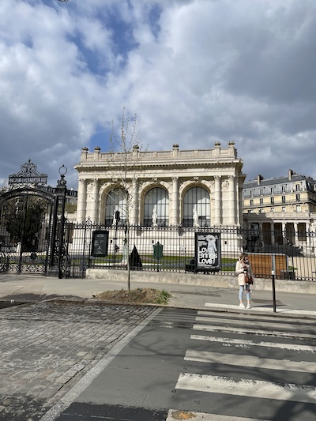
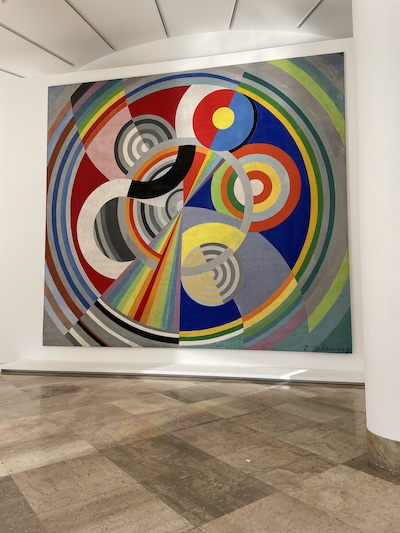

Pre-Tour: Our First Day In France
We wanted to be able to get a full night’s sleep before the tour, so we arrived a day early. When we reserved our
extra time, we called the hotel and let them know we’d be joining the tour as well.
Transportation
We arrived at Charles de Gaulle Airport in the early morning and met José, the taxi driver the hotel sent to meet us.
He was very helpful, and pointed out various landmarks as we drove into the city itself. We passed the Trocadero, drove down the
Champs Elysées and
did a loop around the Arc de Triomphe, before reaching our hotel.



The Neighborhood

The hotel Rick Steves picked was in an amazing neighborhood with bakeries, restaurants and lots of beautiful buildings. Most importantly, it was
right near the park that contains the Eiffel Tower, the Champs du Mars!
After checking in, we ate at a restaurant called Cafe de Mars near the hotel. There were two musicians playing live music, and a cute restaurant
cat that wandered in and out whenever he got bored. The food was great, and the staff was fun. After a relaxing lunch and glass of wine, we walked down
Rue Cler, a pedestrian-only market street, which Rick Steves highly recommends in his books and TV show. You can get anything
from macarons, chocolates, fresh produce, flowers, and more. A lot of the shop windows had beautiful Easter decorations and Easter candies available.
Using Our Spare Time
When we arrived, we should've been tired: it was 1AM or 2AM Eastern time. But we were too excited, so we headed out to sight-see.
We walked across the Seine to the Trocadero plaza, where we got our first unobstructed view of the Eiffel Tower! Next we headed to the fashion museum,
the Palais Galliera, which is housed in a massive old Parisian mansion. Jess drooled over the dresses, and we shopped in its bookstore. We also
visited the Paris Museum of Modern Art and the Palais de Tokyo bookstore, which are all housed in the same complex.

Going Out For Dinner
We had a 7:30 reservation at the restaurant Monsieur Bleu, but we were hungry slightly earlier. We'd heard in a Rick Steves book
that dinner in France is much later than in the US. We thought maybe the bar might be open if we got there early, but the restaurant was completely closed until 7. With that life
lesson out of the way, we headed to the Palais de Tokyo courtyard and stumbled on a party hosted by the champagne company Ruinart. We decided to be
spontaneous when Jess spotted a poster with the RSVP URL, so we RSVP'd on our phones on the spot and headed straight in.
There were art exhibits inside, and it was packed with people. We sampled the champagne, ate canapés, and took part
in a community art project, where you could draw anything you want on a wall (we drew a picture of our dog, of
course). Some other guests were from the US and Canada, so we were able to chat for a bit in English - it was a
blast!
Finally, it was time for our dinner reservation. From inside the restaurant, we had our first view of the Eiffel Tower lit up at night. It
looked incredible! At the end of the meal, we had to admit to ourselves that we were exhausted, and we headed back to the hotel to go
to sleep and get ready for our first official day of the tour.



{% include next_button.html text="On y va! (\"Let's go!\")" url="day1.html" %}